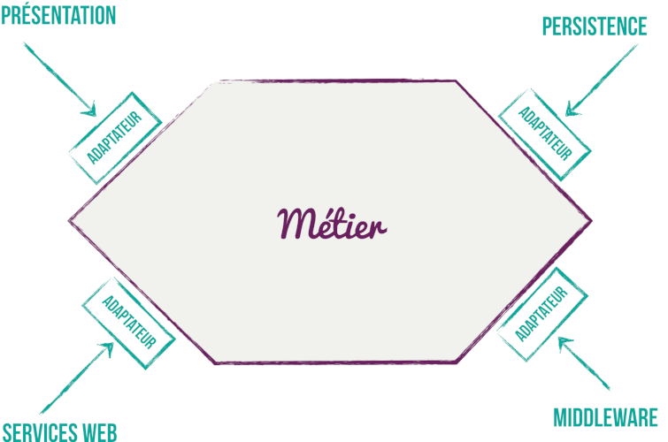

Les difficultés de la modélisation
- Choix techniques précipités
- Immobilisme technique
- Testabilité compliquée et mal dirigée
l’architecture hexagonale à la rescousse...
idée simple : isoler le métier des détails techniques de l’implémentation

le métier ne dépend de rien
toutes les dépendances vont de l’extérieur vers l’intérieur
une couche d’adaptation fait le lien entre les mondes
Il ne doit JAMAIS y avoir dans le domaine, de référence vers l’infrastructure
Le domaine expose des interfaces qui ont un sens métier.
Ces interfaces faisant partie du domaine, elles doivent avoir un sens métier
Anatomie d’un projet maven
...au sein d’une architecture modulaire évolutive
Contient la configuration qui permet d’injecter les Services du domaine
@Configuration
public class ReviewConfiguration {
@Bean
ReviewService reviewService(ReviewDatabaseAccessPorts reviewConfigurationPersistencePort) {
return new ReviewServiceImpl(reviewConfigurationPersistencePort);
}
}
Pour les besoins de notre architecture modulaire, deux autres sous-modules s’ajoutent au domaine et à l’infra.
C’est les classes d’API du module. Tout ce qui est visible depuis l’extérieur du module. Pas de logique, pas de code. Peu voire pas de dépendances (guava & reactor pour les Immutable et Flux).
Qui contient le DSL si le module accède à une base de données
.
├── pom.xml
├── ${module}-api
│ ├── pom.xml
│ ├── src
│ │ ├── main
│ │ │ ├── java
│ │ │ │ └── fr.irun.${module}.api
│ │ │ │ ├── exceptions
│ │ │ │ ├── model
│ │ │ │ ├── Service1Api.java # Interface des services implémenté dans le domaine
│ │ │ │ └── Service2Api.java
│ │ │ └── resources
│ │ └── test
│ │ ├── java
│ │ │ └── fr.irun.${module}.api
│ │ └── resources
│ └── target
├── ${module}-domain
│ ├── pom.xml
│ ├── src
│ │ ├── main
│ │ │ ├── java
│ │ │ │ └── fr.irun.${module}.domain
│ │ │ │ ├── exceptions # Seulement les exceptions interne
│ │ │ │ ├── model # Seulement les POJO interne
│ │ │ │ ├── ports
│ │ │ │ └── services
│ │ │ └── resources
│ │ └── test
│ │ ├── java
│ │ │ └── fr.irun.${module}.domain
│ │ └── resources
│ └── target
└── ${module}-infra
├── pom.xml
├── src
│ ├── main
│ │ ├── java
│ │ │ └── fr.irun.${module}.infra
│ │ │ ├── components
│ │ │ ├── config
│ │ │ ├── controllers
│ │ │ ├── listeners
│ │ │ ├── model
│ │ │ ├── persistence
│ │ │ └── services
│ │ └── resources
│ └── test
│ ├── java
│ │ └── fr.irun.${module}.infra
│ └── resources
└── target